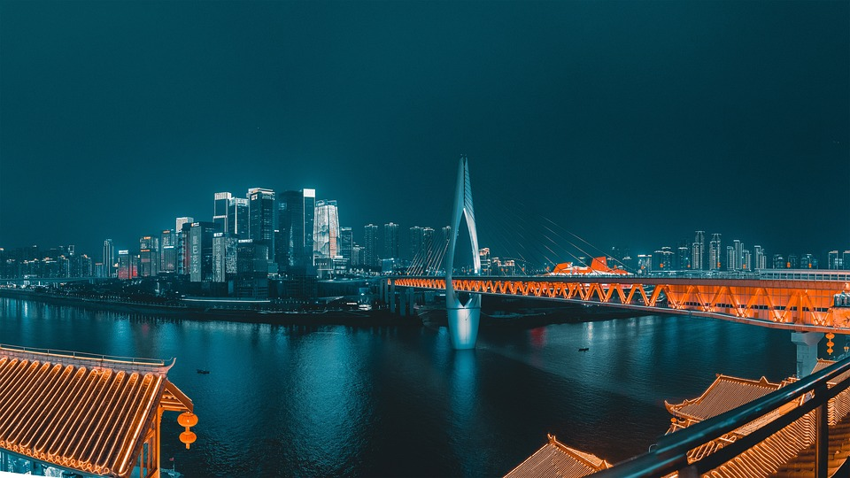
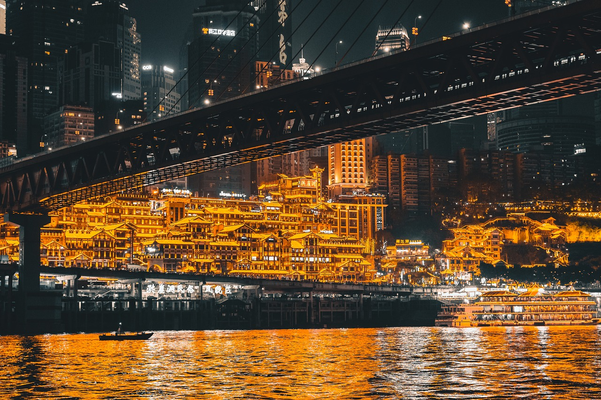

重庆，这座充满魅力的山城，拥有着无数令人陶醉的自然与人文景观。它独特的地理风貌，造就了别具一格的景致，无论是壮丽的山川，还是古朴的街巷，都散发着迷人的气息，吸引着来自五湖四海的游客前来探寻。
洪崖洞是重庆的标志性建筑之一，以其独特的巴渝传统建筑特色的“吊脚楼”风貌而闻名。每当夜幕降临，灯光亮起，整个洪崖洞宛如宫崎骏动画中的奇幻城堡，层层叠叠的楼阁在灯光的映照下金碧辉煌，与嘉陵江的波光相映成趣。游客漫步其中，仿佛穿越时空，置身于古老的巴渝街市，感受着历史与现代的交融。这里不仅是拍照打卡的热门地，还汇聚了众多特色商店与美食摊位，让人们在欣赏美景的同时，也能尽情享受购物与美食的乐趣。
长江索道是重庆独有的一道风景线，它横跨长江，连接渝中区和南岸区。乘坐索道，犹如在空中飞行，脚下是奔腾不息的长江水，两岸是错落有致的高楼大厦和连绵起伏的山峦。在短暂的行程中，游客可以将重庆的壮丽江景尽收眼底，感受这座城市的雄浑与大气。无论是白天还是夜晚，长江索道都能给人带来截然不同的视觉体验，白天可以清晰地看到江面上的船只穿梭，夜晚则能欣赏到两岸璀璨的灯火，如同繁星坠落人间。
解放碑是重庆的地标性建筑，位于渝中区民权路、民族路和邹容路交汇处。它是全中国唯一一座纪念中华民族抗日战争胜利的国家纪念碑，具有极高的历史意义。周围环绕着繁华的商业中心，高楼林立，是购物、餐饮、娱乐的好去处。这里见证了重庆的变迁与发展，人来人往，热闹非凡，白天可感受现代都市的繁华喧嚣，夜晚则在灯光璀璨下更显庄重与大气。
李子坝因轻轨穿楼这一奇特景观而闻名于世。轻轨列车在居民楼中穿梭而过，这种独特的设计与周围的环境完美融合，形成了一道别具一格的城市风景线。游客们纷纷前来，只为亲眼目睹这一奇妙瞬间，感受重庆这座 3D 魔幻城市的独特魅力。周边的李子坝公园环境优美，是市民休闲散步的好地方，也为游客提供了更多了解重庆当地生活的机会。

喀斯特生态公园拥有典型的喀斯特地貌景观，山峦起伏，溶洞奇特。公园里的喀斯特地貌经过长期的自然侵蚀和风化，形成了各种形态各异的岩石、峰林和地下溶洞。溶洞内钟乳石琳琅满目，在灯光的映照下五彩斑斓，仿佛进入了一个神秘的地下世界。公园内的生态环境良好，植被丰富，栖息着多种珍稀动植物，是自然爱好者探索自然奥秘、感受大自然神奇魅力的理想之地。
定心茶园是一片广袤的绿色茶园，茶树郁郁葱葱，连绵起伏。这里的茶叶品质优良，以其清香醇厚的口感而备受赞誉。游客可以漫步在茶园小道上，呼吸着清新的茶香气息，欣赏着优美的田园风光。还可以参观茶叶的制作过程，从采摘到炒制，亲身感受传统茶文化的魅力。茶园内还设有品茶区，游客可以品尝到正宗的定心茶，在宁静的氛围中放松身心，享受悠闲时光。